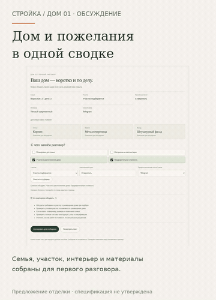

Ваш дом — коротко и по делу.
Семья, участок, населённый пункт, интерьер и материалы собраны в одной сводке. Отметьте темы разговора и скопируйте описание для передачи удобным способом. Можно начать без полного выбора и без загрузки 3D.
Открыть анимированную GIF-версию · Сводка крупно
Сводка на телефоне крупно
Если видео не открывается — показать GIF здесь

Открыть интерактивный прототип →
Предыдущий этап: пояснения к материалам →
Монтаж настоящих экранов прототипа 24 на вымышленном примере заполнения. Не непрерывная запись и не замер FPS. Копирование не отправляет сообщение; контакты компании и доставка заявок ещё не подключены. Проект и цены не утверждены. Физический iPhone/Safari не проверен. Рабочий сайт и сервер не менялись.